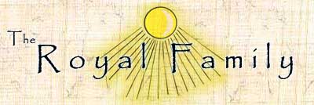

|
 |
 |
 |
 |
|
 Here you may find information about the illustrious Pharaoh Akhenaten, Queen Nefertiti, and the pharaoh’s father and grandfather. Click on a name below to read about the glorious exploits of the 18th Dynasty and learn the latest news of the royal family.
Early in his reign, Pharaoh Akhenaten shocked Egypt by declaring "erroneous" the state religion of Amon-Re and the gods from former times. He became the first ever to promote the worship of the one true God. The pharaoh changed his name to Akhenaten, which means One Who Serves Aten. Guided by the Aten, Akhenaten founded a new religious and political capital in Middle Egypt dedicated solely to the Aten, the creator of life. This city he called Akhetaten, or horizon of the Aten.
Queen Nefertiti, the great royal wife, is renown throughout the Two Lands for her beauty and her devotion to the Aten. Her name means the beautiful one has come. The queen assists the Majesty of Akhenaten in religious ceremonies. She also appears alongside the pharaoh in sculptures and other works of art created in the new style inspired by these visionary rulers. In many of these images, she is shown praising the Aten and receiving an ankh, the symbol of life, from the rays of God. Queen Nefertiti has given the pharaoh six beautiful daughters: Meritaten, Meketaten, Ankhsenpaaten, Neferneferuaten, Neferneferure, and Setepenre.
Amenhotep III, also known as Amenhotep the Dazzling Sundisk, the father of Pharaoh Akhenaten, inherited a kingdom blessed with peace and riches. Internationally esteemed for his diplomatic skills, Amenhotep III embarked upon a construction program unprecedented in Egyptian history. One of the greatest of his monuments is an elaborate funerary temple across the Nile River from Thebes that features two huge statues of this glorious ruler. Amenhotep’s great love was Tiye, who, though a commoner, became his queen and the mother of Pharaoh Akhenaten.
Thutmose III, the great-great-grandfather of Pharaoh Akhenaten, is remembered in glory as a mighty warrior. This iron-willed king’s frequent military campaigns made Egypt the strongest empire in the world. His efforts brought the empire many valuable resources, including slaves, copper, gold, ivory, and ebony.
The queen mother, though sad at the death of her granddaughter, reminisced with great satisfaction about the "Tribute of Nations," held two years ago. This grand celebration in Akhetaten drew multitudes of ambassadors from lands beyond Egypt, who offered praise and valuable gifts to the Aten and Pharaoh Akhenaten. The delegations, received by Pharaoh Akhenaten, Queen Nefertiti, and their daughters, marked one of the last public appearances of Princess Meketaten. return to top |